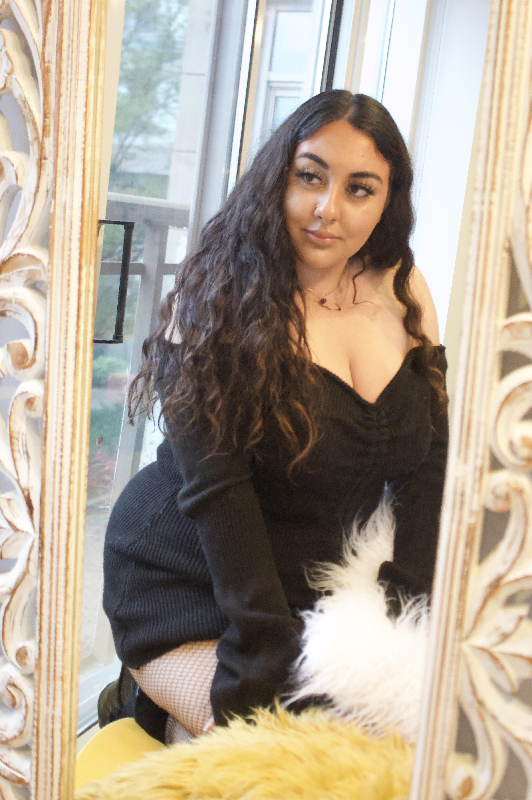

ABOUT AROOSAK

Hi there!
Thank you for dropping by and taking interest in learning more about me and what I do!
My Instagram platform, Lil Aroosak, is dedicated to all factors of mental wellness while breaking societal standards and challenging social stigma. I would say my work is most known for my consistent and powerful recipes for healing and self love. My goal through each post is to convey important information in a safe and loving package.
I always felt like there was a lack of representation for plus-size people in my community and topics pertaining to eating disorders, body neutrality, and inner child healing were rarely discussed. With that in mind, I created the platform Aroosak. Through my experience and insight, I hope to create change in the ways we view ourselves and find the roots of what makes us who we are in this moment.
To connect with me and my community, find me on Instagram @lilaroosak